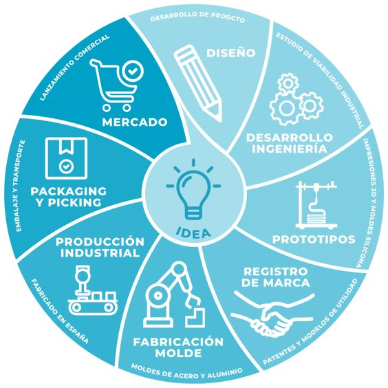
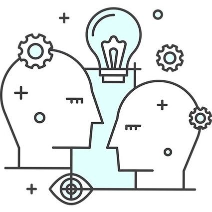

¿Que es?
El modelado de procesos de negocio es como un mapa que te ayuda a comprender y mejorar la forma en que se hacen las cosas en una empresa. Es una herramienta poderosa que permite visualizar, analizar y optimizar los procesos clave que impulsan una organización.
¿De qué se trata?
En esencia, el modelado de procesos de negocio consiste en:
- Identificar: Se busca comprender las actividades que se realizan en un proceso específico, desde el inicio hasta el final.
- Documentar: Se registra cada paso, incluyendo las entradas, las salidas, los recursos utilizados, las personas involucradas y las reglas que se aplican.
- Visualizar: Se representa el proceso de forma gráfica, utilizando diagramas y símbolos estándares, para que sea fácil de entender para todos.
- Analizar: Se evalúa la eficiencia, la eficacia y la calidad del proceso, buscando áreas de mejora.
- Optimizar: Se implementan cambios para mejorar el proceso, eliminar pasos innecesarios, reducir los tiempos de espera y aumentar la productividad.
Beneficios del Modelado de Procesos de Negocio:

- Mayor eficiencia:Al identificar y eliminar las ineficiencias, se optimizan los recursos y se reduce el tiempo de entrega.
- Mejor comunicación: La representación gráfica facilita la comprensión del proceso por parte de todos los involucrados.
- Mayor control: Se establece un seguimiento claro de cada paso, lo que permite detectar problemas y tomar medidas correctivas.
- Mayor flexibilidad: Se facilita la adaptación a los cambios en el mercado o en las necesidades de los clientes.
- Mejor toma de decisiones: El análisis de los procesos permite identificar áreas de mejora y tomar decisiones estratégicas más informadas.
Técnicas de Modelado de Procesos de Negocio:
Existen varias técnicas para modelar procesos, entre las más populares se encuentran:
- BPMN (Business Process Model and Notation): Un estándar ampliamente utilizado para modelar procesos de negocio.
- UML (Unified Modeling Language): Un lenguaje de modelado orientado a objetos que se puede utilizar para modelar procesos.
- Flowcharts: Diagrama de flujo que representa el flujo de trabajo paso a paso.
- Swimlanes: Diagrama que divide el proceso en diferentes roles o departamentos.